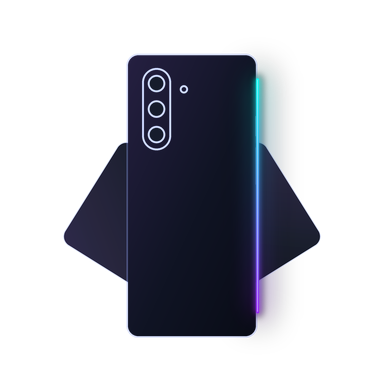
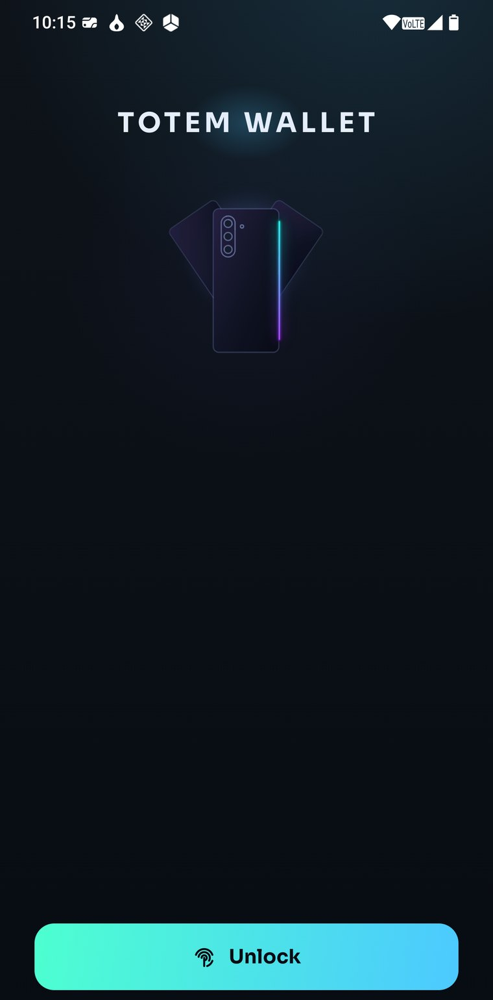
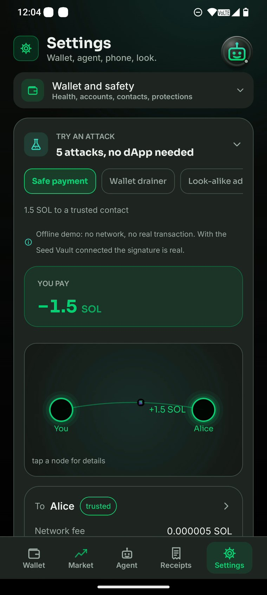
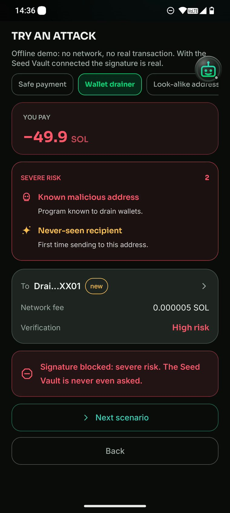
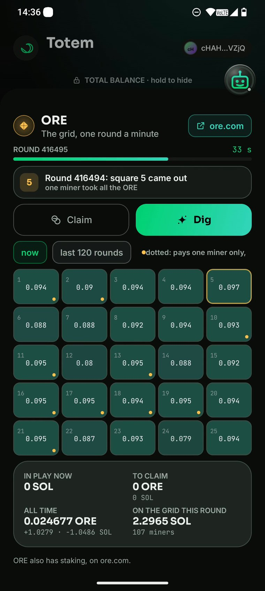
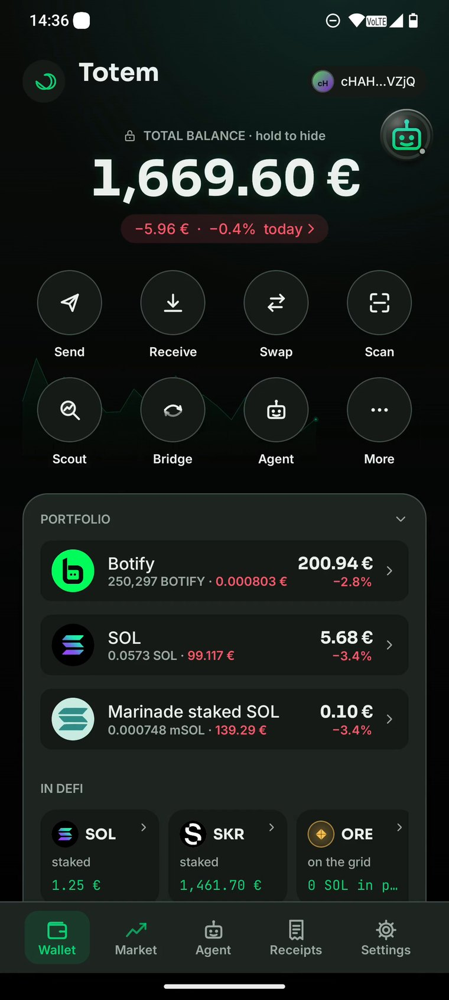
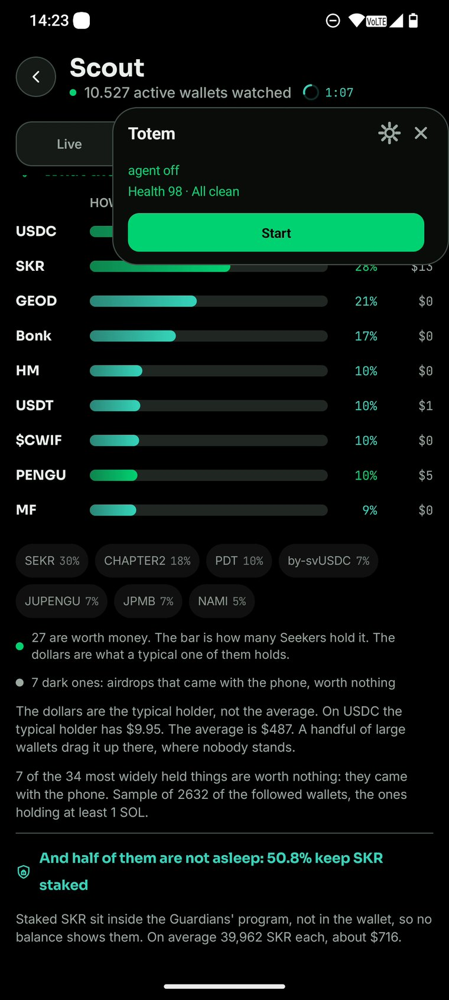
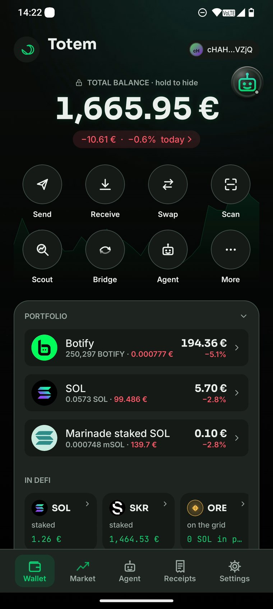

Totem Wallet
A wallet for the Solana Seeker that shows you what a transaction really does before you sign it, and an agent that trades a small budget inside limits you set.
What you see is what you sign.
01 · The problem
You see the amount. You do not see who gets it.
A wallet shows you a name, a number and a network fee, and a button that says Approve. What it does not show you is where the money actually goes. The addresses turn up later, in an explorer, once the transaction is already signed. If one of them belongs to someone who is robbing you, you learn it too late.
It does not show what you are granting, either. An unlimited approval looks like an ordinary confirmation, and it keeps working until you go and revoke it.
The Seed Vault signs whatever the wallet hands it. The hardware is not the weak part. The screen in front of it is.

02 · What a signature should show
Every wallet the money touches, before you sign
This is the screen that comes before the fingerprint. It is not a summary the app wrote: it is what the network says the transaction will do.
- Every address the money reaches, drawn as a map, including the legs a swap spreads across several wallets.
- Who they are: a contact of yours, an address you have paid before, or one you have never seen. Tap any of them to see what that wallet actually is.
- The fee on its own line, so it is never mixed up with what you are sending.
- Look-alikes flagged: an address that matches one of yours at the start and the end but differs in the middle is marked, because that is exactly how people get robbed.

03 · The same screen, on an attack
It stops before the Seed Vault is asked
Here a dApp asks to drain the wallet. The receipt names the real amount and the real recipient, marks the address as known for draining wallets, and notes that you have never sent anything there before.
The signature is refused. The Seed Vault is never even asked, so there is no prompt to tap through by accident.
Five attacks are built into the app and work with no dApp and no network: a drainer, a look-alike address, an unlimited approval, a state change between reading and signing, and an ordinary safe payment for comparison. Anyone can try them.

04 · ORE
The grid, read from the program itself
ORE is a game on Solana: a five by five grid, one round every minute. It is written in Steel, so there is no IDL to lean on. Totem decodes the program by hand and shows what a square really costs and what it can pay, before you put anything on it.
- The live round, the emptiest squares right now, and how many miners are on the grid.
- A Deploy or a Claim from any dApp appears in the receipt as what it is: a wager, with the squares and the SOL at stake.
- The agent can dig from its budget under the same limits, and bring the gains home in ORE when the budget closes.

05 · The agent
A budget of its own, and limits you write
You open a budget: a second key, made on the phone, with a cap in SOL and a date it ends. Your seed is never part of it. The agent looks for a coin every few minutes, checks it against the same gates the serious bots use, buys a slice, and sells at your target or your stop.
You set the limits: how much per move, how much per day, how often, and above what amount it has to stop and ask for your fingerprint. Every move is measured by its simulated effect, not by what the agent says it is doing. Rules you write yourself can only close doors, never open them.
And you can watch it: the open positions on charts with entry, target and stop drawn in, its reasoning typed out as it arrives, and a voice that says what it is doing.

06 · An agent on your computer
It never holds a key. It has to prove what it is doing.
An agent running somewhere else hands the phone a transaction and a declaration: this is what I am about to do. Totem simulates the real bytes and compares the two.
- Every outflow has to be the one it declared, in the amount it declared.
- A swap has to actually bring back the token it promised.
- No delegation, authority change or durable nonce hidden anywhere in it.
If the declaration and the effect do not match, the signature does not happen, and the screen lists which part did not match. It does not judge whether a trade is a good idea. It checks that the agent is telling the truth.
07 · Scout
What the other Seekers are doing, right now
The Genesis Token is one per device, so the crowd is real people holding a Seeker: 120,520 wallets, enumerated once on chain, and about ten and a half thousand of them active enough to watch continuously.
- Live: the buys and sells as they land, with the wallet behind each one.
- Buying, Holding, Whales: what the crowd is picking up, what it actually holds, and who the big ones are. Tap any of them to see that wallet's moves drawn on the chart.
- Follow a wallet and the phone tells you when it buys. The agent can mirror it.
- Buy from the feed without leaving the row, with the same receipt as everywhere.
And a number no balance shows: half of the active Seekers keep their SKR staked with the Guardians, about 39,962 each. Read straight from the staking program, with the yield measured from the share price: 15.4%, against the 21.25% you would get by deriving it from tokenomics.

08 · The market, inside the wallet
Every coin, its chart, and what yours would be worth
No jumping to a browser to look something up.
- Every coin on Solana, ranked by market cap, searchable, each with its chart and its price history from CoinGecko.
- What if it were as big as… pick any other coin and see what one of yours would be worth at that market cap, and what your holding would be worth. Times two, ten, a hundred.
- Favourites with their total, and a bell when something moves five percent.
- Bitcoin and Ethereum as they really exist on Solana: the official bridged ones, not the copies.
- Realised profit and loss per coin, worked out from your own receipts, and a card you can share.
09 · Money in a link
Pay someone who has no wallet at all
Totem makes a small throwaway wallet, puts the amount inside it, and hands you a link. Send it however you like: a message, a chat, a piece of paper.
Whoever opens it takes the money, and if they have no wallet the link opens a page that works anyway. Nothing was taken? The list of open gifts shows it, and you take it back.
The honest part is written on the screen: the link carries the key, so the first person who opens it gets the money. In exchange it works with anybody, over anything, with no address and no app on the other side.
10 · Pay by touch
The things only a Seeker can do
- Get paid by touch. The phone behaves like a payment card: the other person holds theirs against it and pays.
- A sticker. Write a payment request onto a blank NFC tag costing a few cents, and stick it on a counter. Anyone who taps it with any wallet gets the payment ready. Lock it and nobody can rewrite it.
- Contacts by touch. Two phones touch and save each other, each card signed by the phone's own key. From then on, a look-alike address has nothing to grab onto.
- Proof of payment. After a payment the phone makes a QR it has signed itself. Another phone reads it and confirms the amount and the recipient, with no explorer and no network at all.
11 · Swaps and bridges
Out of the public queue, and across two hundred chains
- Swaps go out privately through Jupiter Ultra, past the bots that read the public queue, with the route and the slippage chosen from how volatile the coin actually is.
- Orders that live on chain: sell at a target, buy below a price, buy in rounds. They fire with the phone switched off.
- A bridge to more than two hundred chains with no account, and the receipt first, like everything else.
- A private send from Solana to Solana through the same bridge, with an honest line about what it does and does not hide. It is not a mixer, and the app says so.
12 · It stays with you
A widget, and a face that follows you over any app
Most of what matters happens when the app is closed.
- A widget on the home screen with the wallet's health score, the balance, and what is worth fixing. It refreshes without opening the app.
- A small face that floats over any app, draggable anywhere, showing the agent's work, the budget, the health or the coin you care about. You pick which.
- Notifications that carry a picture of where each coin sits between its stop and its target, with Sell now and Stop on the notification itself.
- It audits itself: approvals you forgot, rent locked in dead accounts, and pool fees nobody ever collected on Orca, Raydium and Meteora, found straight from the chain with no key of yours.

13 · Try it
All of this runs on mainnet today
Not a port and not a mockup. The repository starts on 11 September 2026, during the hackathon, and everything in it is new: Kotlin and Jetpack Compose, a safety core in pure Kotlin with 397 tests, and an attacker dApp shipped in the repo so anyone can try the defences for themselves.
Receipt before signature. Everywhere. On a dApp, on a Blink, on a bridge, on the grid, and on everything the agent does.